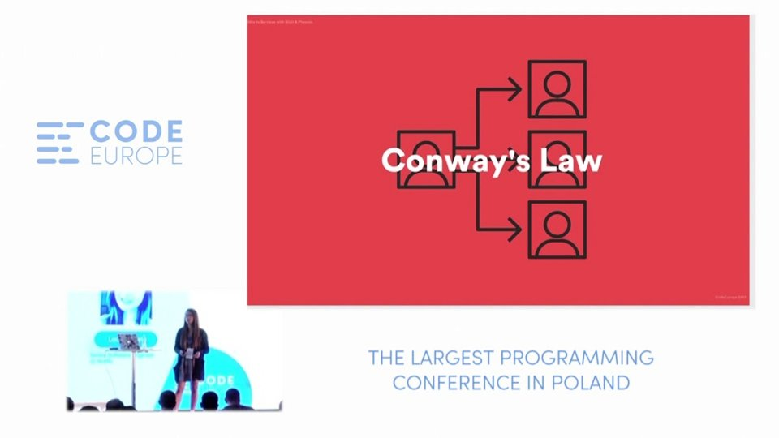

2017 · Code Europe
Monoliths to Services with Elixir and Phoenix

Viewing notes
How does a team see what its software is doing after splitting it into services? Tan moves from Elixir language features to monitoring the running system, then into the mechanics of umbrella applications. Follow that change of scale. A pipe makes successive transformations legible in one function. The larger challenge is keeping the collaboration between parts legible once several applications share responsibility for a feature.